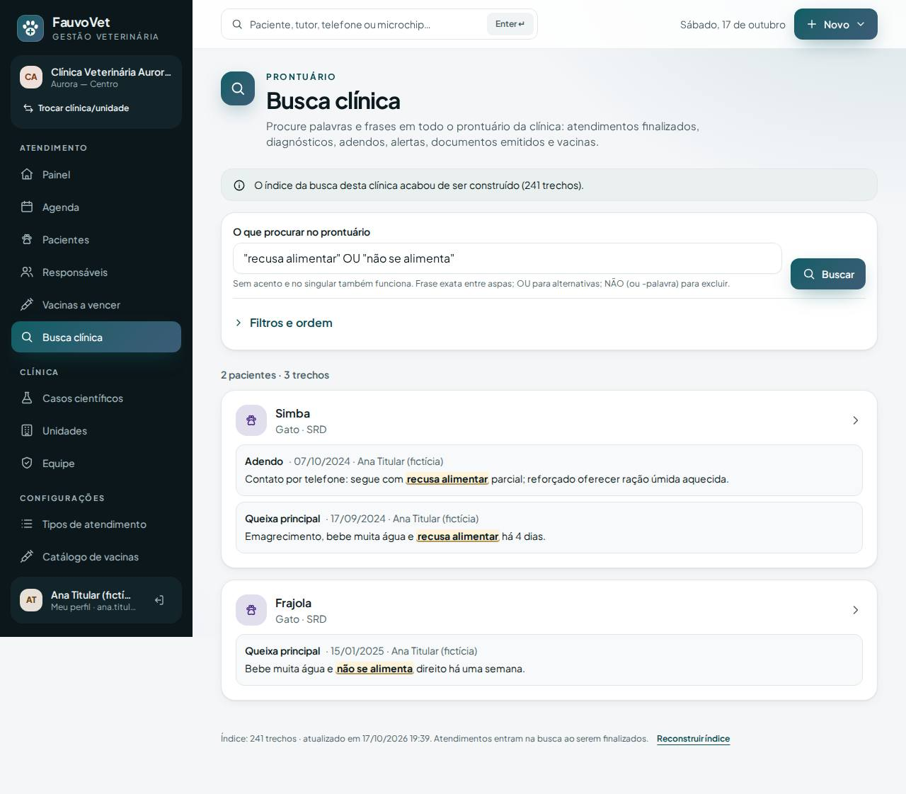
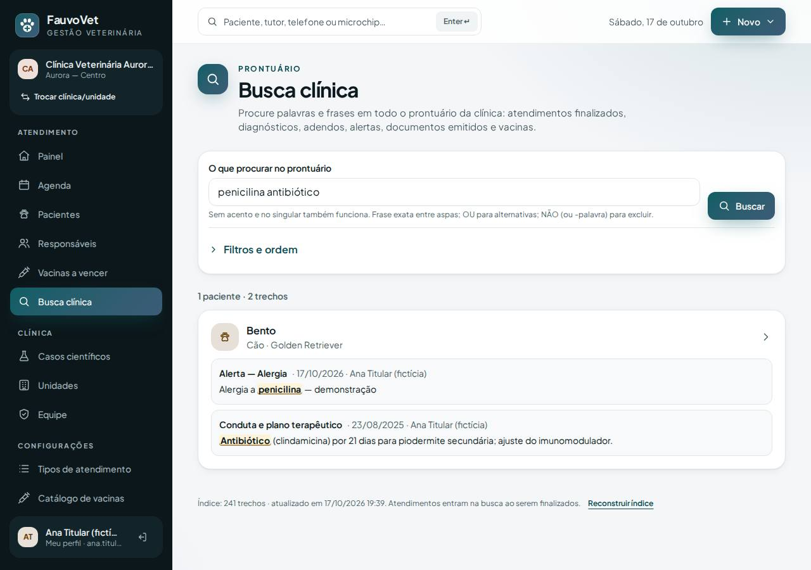
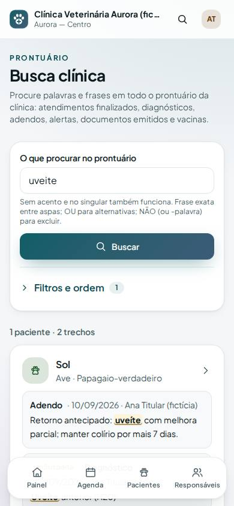

Busca clínica: procurar palavras e frases em todo o prontuário, com o trecho destacado
ID: 2026-10-19-busca-clinica · Data: 19/10/2026 · Versão: 0.13.0 · Módulo: Fase 2 — Busca clínica inteligente (ADR-017) · Estado: implementado e testado localmente; publicação a cargo do proprietário (seção 7)
1. Objetivo
É o diferencial do produto (CLAUDE.md §3). Até aqui dava para filtrar pacientes por diagnóstico estruturado. Agora dá para procurar qualquer palavra ou frase escrita no prontuário. Exemplos: "recusa alimentar", "uveíte", "xampu".
Cada resultado mostra qual paciente, em que registro, em que data, quem escreveu e o trecho com a palavra destacada. Um clique abre o registro original.



2. O que mudou
- Menu → Busca clínica (equipe com acesso clínico: veterinário, assistente, titular). No celular, fica em "Mais opções".
- Onde procura: atendimentos finalizados (queixa, anamnese, exame físico, conduta, orientações), diagnósticos (com a situação), adendos, alertas (alergias etc.), documentos emitidos e vacinas. Rascunhos não entram.
- Como digitar:
- acentos, maiúsculas e plural não importam:
dermatites atopicasencontra "Dermatite atópica"; - várias palavras = todas precisam aparecer no prontuário do mesmo paciente, mesmo em registros diferentes (
penicilina antibióticocruza o alerta de alergia com a conduta); "frase exata"entre aspas;OU(maiúsculo) para alternativas:"recusa alimentar" OU "não se alimenta";NÃO palavraou-palavrapara excluir pacientes que tenham a palavra;- palavras com menos de 3 letras e palavras comuns ("de", "com") são ignoradas fora das aspas, e a tela avisa.
- acentos, maiúsculas e plural não importam:
- Filtros e ordem (painel recolhível): espécie, período (30 dias a 5 anos), onde procurar (atendimento, diagnóstico, adendo, alerta, documento, vacina), situação do diagnóstico (separa suspeitas de confirmados) e ordenação (relevância, mais recentes, mais antigos, nome).
- Atalho: na tela Pacientes, ao digitar um termo, aparece "Procurar “termo” no prontuário".
- Índice sempre em dia: finalizar atendimento, adendo, alerta, documento e vacina atualizam o índice do paciente na hora. Na primeira busca da clínica, o índice inteiro é construído sozinho; o rodapé mostra quantos trechos tem e quando foi atualizado. O titular tem o botão Reconstruir índice.
- Segurança: recepção e financeiro recebem 403. A busca só enxerga a clínica ativa. A auditoria (
clinical.search) registra filtros e número de resultados, nunca o termo. Há limite de 40 buscas por minuto por usuário e teto de 5.000 registros por termo (acima disso, a tela pede para refinar). - Dados de demonstração ampliados, para confirmar a busca na produção (seção 5):
- queixas com "recusa alimentar" (Simba) e "não se alimenta" (Frajola);
- uveíte em papagaio (Sol), com adendo de retorno;
- alerta "Alergia a penicilina" e conduta com "Antibiótico" (Bento);
- 3 adendos; agora são 33 atendimentos.
- Arquivos:
- migração
2026_10_19_000001_create_clinical_search_tables(3 tabelas: trechos, termos e situação do índice); app/Support/SearchText.php(normalização, plural, operadores, trecho destacado);app/Services/ClinicalSearchIndex.phpeClinicalSearchService.php;ClinicalSearchControllereresources/views/search/index.blade.php;- ganchos em
ClinicalRecordService,DocumentServiceeVaccinationService; DemoDataService;- testes
ClinicalSearchTest(6, sendo 1 de isolamento),DemoDataTestampliado, E2Eclinical-search.spec.tse axe; - ADR-017;
TEMPLATE.htmlganhou a subseção obrigatória "Confirmar o funcionamento com os dados de demonstração".
- migração
Dependências novas: nenhuma.
Ainda não incluído: texto de anexos (PDF/DOCX enviados) e o dicionário de sinônimos configurável. São os próximos itens da Fase 2 (docs/IDEAS.md).
3. Pré-requisitos
Os mesmos das entregas anteriores. Não exige extensão PHP nova nem configuração especial do MySQL (funciona em 5.7 e 8.0).
Git Bash/macOS: NOT RUN.
4. Passo a passo (no seu computador)
- Terminal
cd ~/code/fauvovet→git pull --ff-only→pnpm db:start→pnpm db:migrate(1 migração nova). - Terminal
pnpm dev→ entre comobruno.vet@aurora.exemplo.test→ menu Busca clínica → digitedermatite→ Buscar.
5. Como testar
pnpm verify --e2e
pnpm test:tenant-isolation- Como Bruno (dados do seed):
dermatites atopicas: Thor, com os trechos "Dermatite atópica" destacados e os selos Suspeita e Confirmado;penicilina prurido: Thor (alerta + queixa de outro atendimento);dermatite NÃO prurido: nada;- em Filtros e ordem, escolha Situação: Suspeita: só o atendimento da suspeita.
- Índice em dia:
- abra a Mia → Novo atendimento → queixa "suspeita de giárdia" → salve o rascunho:
giardianão encontra nada; - finalize o atendimento: agora encontra, com "Queixa principal" e a data de hoje.
- abra a Mia → Novo atendimento → queixa "suspeita de giárdia" → salve o rascunho:
- Permissões e isolamento:
- como Carla (recepção),
/buscaresponde 403 e o menu não mostra o item; - como Diana (clínica B),
dermatitenão encontra nada e"recusa alimentar"encontra só o Jabu, da própria clínica.
- como Carla (recepção),
Confirmar o funcionamento com os dados de demonstração
Funciona igual no seu computador e na produção, depois de publicar (seção 7).
Se você já tinha carregado a demonstração antes, ela não tem os textos novos. Vá em Configurações → Dados de demonstração, marque a confirmação, clique em Remover demonstração e depois em Carregar demonstração.
- Navegador entre com o usuário titular → Configurações → Dados de demonstração → Carregar demonstração. Deve aparecer "Demonstração carregada: 22 pacientes, 33 atendimentos…".
- Frases alternativas: clique no atalho Busca clínica: “recusa alimentar” OU “não se alimenta”.
- Deve aparecer: 2 pacientes, Simba e Frajola. O Simba tem 2 trechos (queixa principal e um adendo); o Frajola tem 1. As frases ficam destacadas em amarelo.
- Clique no título de um trecho: abre o atendimento daquele dia.
- Filtro de espécie + adendo: volte e clique em Busca clínica: uveíte em aves.
- Deve aparecer: 1 paciente, Sol (papagaio), com 2 trechos: o adendo "Retorno antecipado: uveíte…" e o diagnóstico com o selo Suspeita "Uveíte anterior (H20)".
- Abra Filtros e ordem, troque a espécie para Cão e clique em Aplicar filtros: "Nada encontrado".
- Termos em registros diferentes: clique em Busca clínica: alergia a penicilina + antibiótico.
- Deve aparecer: Bento, com 2 trechos: "Alerta — Alergia: Alergia a penicilina" e "Conduta e plano terapêutico: Antibiótico (clindamicina)…".
- Acentos, plural e exclusão: digite estas buscas.
DOENCAS RENAIS(sem acento, no plural): encontra os gatos com doença renal crônica.renal NÃO hipertensão: o Frajola (que tem hipertensão) some, e aparece o selo "sem “hipertensao”".
- Situação do diagnóstico: busque
dermatite→ Filtros e ordem → Situação do diagnóstico: Descartado → Aplicar filtros. Deve aparecer: só a Pipoca, com o selo Descartado (a dermatite atópica dela foi descartada). - Atalho pela tela Pacientes: menu Pacientes → digite
xampu→ Buscar. Nenhum paciente tem esse nome; clique em Procurar “xampu” no prontuário. Deve aparecer: Bento, com o adendo "…banho com xampu comum…". - Índice: no rodapé da Busca clínica aparece "Índice: N trechos · atualizado em …". Como titular, clique em Reconstruir índice. Deve aparecer: "Índice da busca clínica reconstruído: N trechos."
- Permissão: entre com um usuário de recepção (se houver na equipe). O menu não mostra Busca clínica, e o endereço
/fauvovet/buscaresponde "Acesso negado". - Limpeza: ao terminar, Remover demonstração também tira esses pacientes da busca (procure
uveitede novo: nada).
6. Performance e usabilidade
- Medição local (WSL, servidor PHP embutido, Percona 5.7, clínica com seed + demonstração ≈ 240 trechos): 30 buscas variadas, p50 37 ms, p95 47 ms, máx. 59 ms (tempo da página inteira).
- Volume grande (dezenas de milhares de atendimentos): NOT RUN.
- Cada termo usa o índice
(tenant_id, term, document_id)por prefixo; o teto de 5.000 registros por termo limita o pior caso. - A primeira construção do índice numa clínica grande é feita na própria página e pode levar segundos; foi registrado em
docs/IDEAS.mdpara virar tarefa em segundo plano.
- Cada termo usa o índice
- Celular: filtros recolhidos num painel (abre sozinho só quando não há resultado), trechos legíveis e nada passando da borda. Acessibilidade (axe) sem violações na tela vazia e com resultados.
7. Implantação na Locaweb
Mesmo roteiro das entregas anteriores. Se vacinação, busca avançada, casos e demonstração ainda não foram publicados, este pacote leva tudo junto.
- Terminal
cd ~/code/fauvovet→git pull --ff-only→pnpm db:start→pnpm verify --e2e→pnpm deploy:package→pnpm deploy:copiar - Painel Locaweb backup do banco.
- Terminal
pnpm deploy:token. - FileZilla no
.envdo servidor:DEPLOY_TOOLS_ENABLED=true+ o token novo;- confira que existe a linha
FAUVOVET_DEMO_DATA=true; se não existir, acrescente; - envie e apague
bootstrap/cache/config.php(se existir).
- FileZilla
app-fauvovet(tudo excetostorage) epublic_html/fauvovet, com Sobrescrever. - Terminal
diagnostico→migrar→otimizar. Opending_migrationsserá 1 se o pacote anterior já foi publicado, ou 3 se vacinação e casos também vão agora. - FileZilla
DEPLOY_TOOLS_ENABLED=false→ enviar → apagarbootstrap/cache/config.php. - Terminal
SMOKE_URL=https://dradeboragaldino.com.br/fauvovet pnpm smoke(5 PASS). - Navegador siga a subseção "Confirmar o funcionamento com os dados de demonstração" (seção 5). A primeira abertura de Busca clínica constrói o índice e mostra "O índice da busca desta clínica acabou de ser construído".
Sem HTTPS válido, só dados fictícios. Antes do primeiro paciente real: remover a demonstração e voltar FAUVOVET_DEMO_DATA=false.
8. Rollback
- Código: reenvie o pacote anterior em
.deploy/e rode o otimizar. As 3 tabelas novas ficam sem uso e não afetam nada: o índice é só uma cópia derivada do prontuário. - Índice inconsistente: como titular, Busca clínica → Reconstruir índice; ele é refeito inteiro a partir do prontuário.
- Banco: restaure o backup do passo 2, se preciso.
- Local:
git revertemigrate:rollback --step=1(só desenvolvimento).
9. Troubleshooting
| Sintoma | Causa e solução |
|---|---|
| "Nada encontrado" para algo que está num atendimento | O atendimento ainda é rascunho; finalize. Ou o termo tem menos de 3 letras: use aspas, ex. "pó". |
| Paciente demo não aparece na busca | A demonstração foi carregada antes desta versão: remova e carregue de novo. |
| OU/NÃO não funcionam | Escreva em MAIÚSCULAS (OU, NÃO); em minúsculas são tratados como palavras comuns. |
| "Muitos registros com estes termos…" | Mais de 5.000 registros com o termo: acrescente palavras ou filtros. |
| "Acesso negado" na Busca clínica | O papel não tem acesso clínico (recepção, financeiro, estoque). |
| Erro 500 ao abrir a Busca clínica | A migração não foi aplicada: rode diagnostico e migrar. |
| "Muitas tentativas" (429) | Mais de 40 buscas por minuto pelo mesmo usuário; aguarde um minuto. |
10. Evidências e status
| Verificação | Status | Detalhe |
|---|---|---|
pnpm verify --e2e | PASS | 9/9 etapas |
| PHPUnit | PASS | 175 testes (6 novos de busca + demonstração ampliada) |
| Isolamento | PASS | 42 testes (1 novo: busca e índice só da clínica ativa) |
| E2E + axe + borda no celular | PASS | 75 testes; termo → trecho destacado → atendimento de origem; demonstração (uveíte em aves); axe na busca vazia e com resultados |
| Aceite CLAUDE.md §3.3 | PASS | exemplos 1, 2 (com o filtro de situação), 3, 5, 6, 7, 8 e 9 cobertos por testes. Exemplos 4 e 10 (texto de anexos) ficam para a próxima entrega. |
| Desempenho em volume grande | NOT RUN | Ver seção 6 |
Commit: registrado no docs/PROGRESS.md após a sincronização.
Próximo passo sugerido: extrair o texto de anexos PDF/DOCX para a busca, com o status "sem texto pesquisável" quando não for possível (exemplos 4 e 10 do §3.3), e depois o dicionário de sinônimos da clínica.